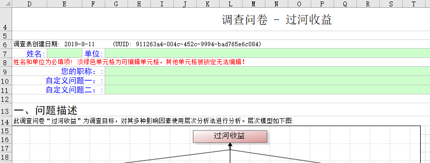
为什么锁定单元格？
在XLS格式的AHP调查表以及FCE评测表中, 对部分单元格进行了保护, 无法进行编辑, 可以编辑的单元格背景颜色是淡绿色的。
锁定单元格/工作表加保护的原因: 这两种Excel格式文件的作用是收集专家决策数据, 回收后文件中的数据将导入到yaahp软件中进行计算。为了导入数据, 工作表中各个单元格中的数据必须能够被yaahp识别, 所以在这个文件中隐藏有很多模型、要素的定义数据, 以及单元格的说明数据, 改变这些数据或改变数据所在单元格位置将导致回收后的数据无法导入, 所以对这些单元格加了保护。
使用Excel打开调查表文件后，会发现行编号从4、列编号从D开始，而不是1和A，如下图所示。
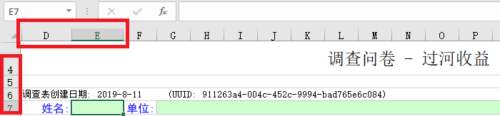
这些看不到的行和列保存了导入数据所必需的信息，任何的内容或位置变化，都将导致调查表数据无法导入。去掉文件保护、拖动显示这些隐藏的行列后，这些隐藏数据内容如下图所示(红框中的内容)。
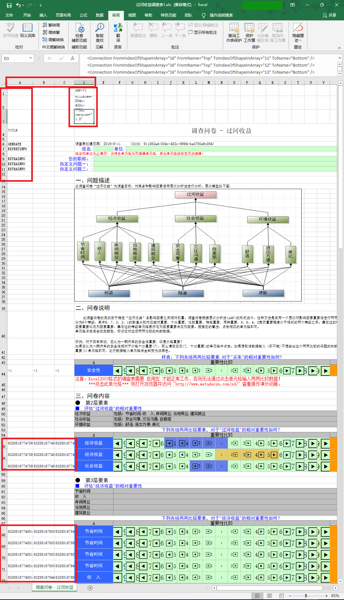
所以，调查问卷如果去掉保护，任何在生成问卷时无法修改的内容变化都可能导致问卷数据无法导入。本文后面的内容对问卷各部分内容的设定进行介绍。
在生成问卷时通过设定修改生成的问卷内容
设定标题、摘要、说明、内容、感谢语等文本内容
生成问卷时直接在调查表设置界面编辑相应文本即可，如下图。
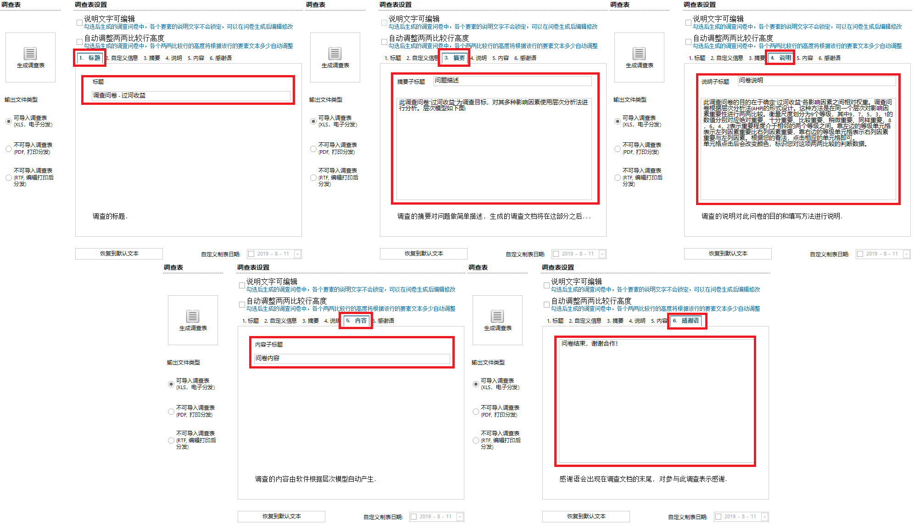
设定要素名称单元格高度
调查表中两两比较的要素名称由模型中的要素名称决定，但单元格的高度有两种设定：固定高度和自动调整高度。
例如在下图所示的模型中，选中要素的文本很多(占了三行)。
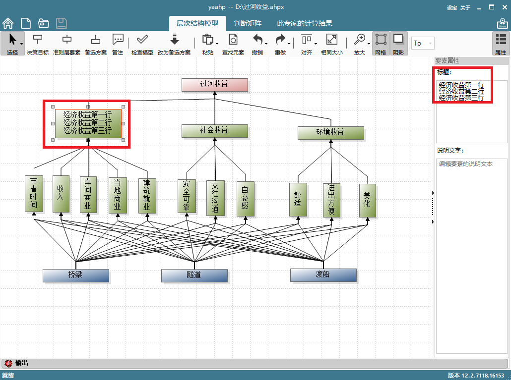
如果固定行高度(默认设定)，所有两两比较行高将相同(可能无法显示完整所有文本)，如下图上半部分所示；如果设定自动调整高度，如下图下半部分所示。下图中红框中的内容可以看出差别。
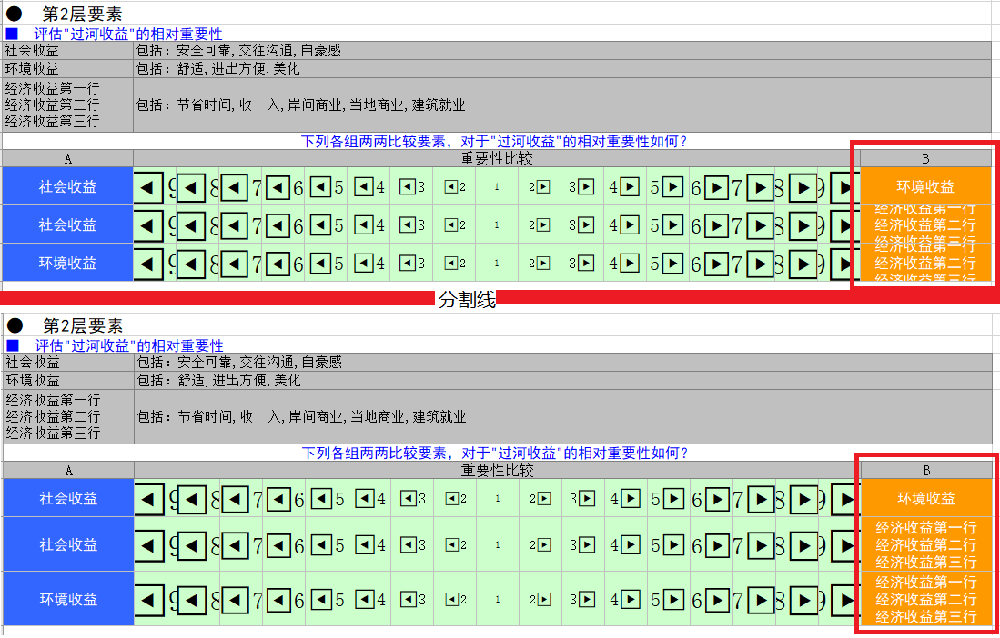
这项设定可以通过勾选/取消勾选下图红框标记的核选框进行设定。
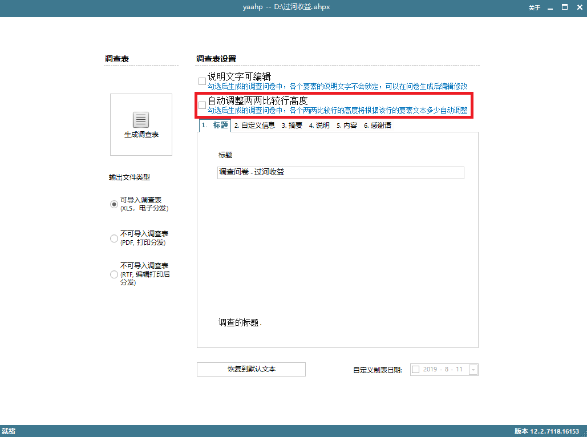
设定要素说明文字
1. 编辑模型时设定
调查表中两两比较表哥上方的要素说明文字由模型中的要素说明文字决定。要素说明文字可以在构建模型时编辑，选中要素文本即可在右侧的要素属性编辑界面进行编辑，如下图所示。
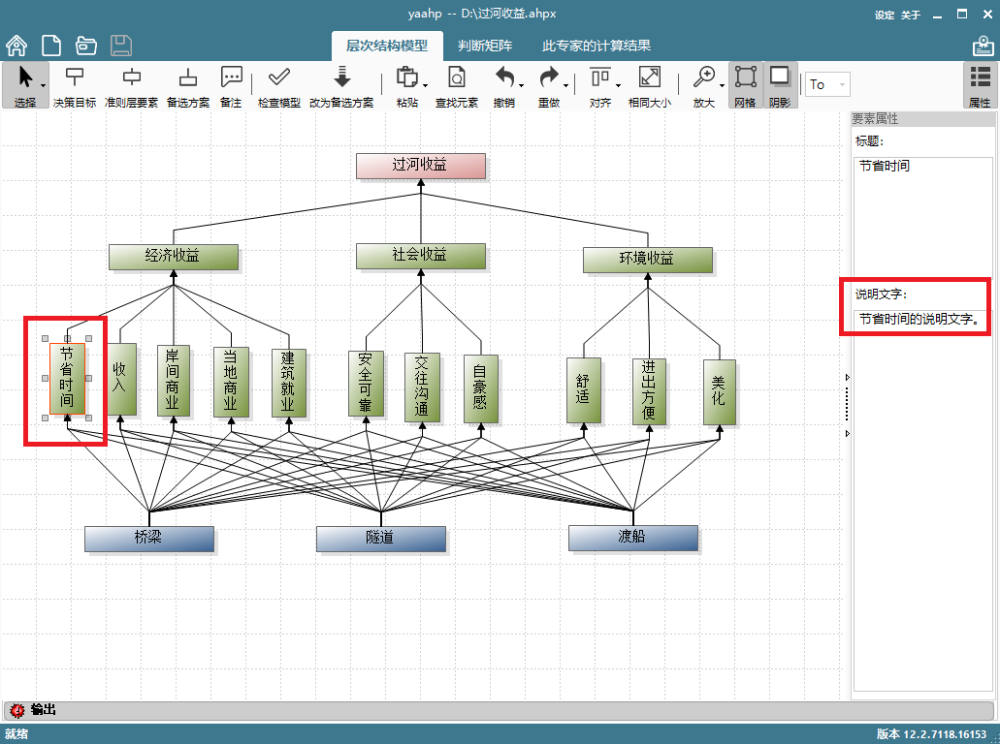
上图将要素“节省时间”的说明文字编辑为“节省时间的说明文字。”，这样生成的问卷中相应的说明文本就会使用该要素说明文字。如下图所示。
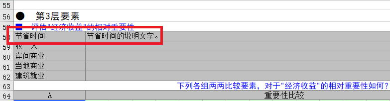
2. 生成问卷后编辑
生成问卷时，如果勾选“说明文字可编辑”，就可以在生成问卷后对问卷中的要素说明文本进行编辑。
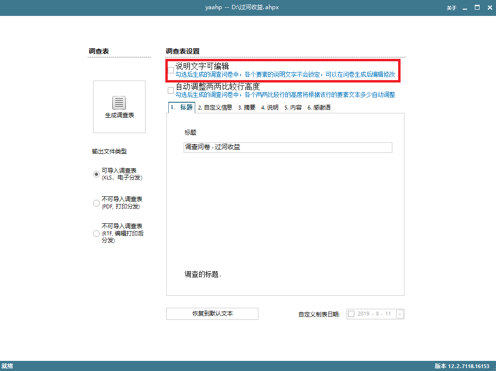
这样生成的调查问卷中，要素的说明文字单元格不会锁定，其中的内容是可以编辑的。
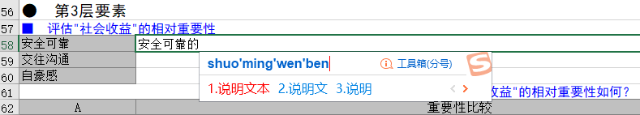
设定自定义信息
设定自定义信息的文本内容
调查问卷中有时需要收集一些额外的信息，例如填写问卷的专家的学历、职称等，这些内容生成调查表时在“自定义信息”界面中设定。下图所示界面中添加了三个额外的自定义信息“您的职称：”、“自定义信息问题一：”和“自定义信息问题二：”。标题列中各行内容可以自行输入编辑。
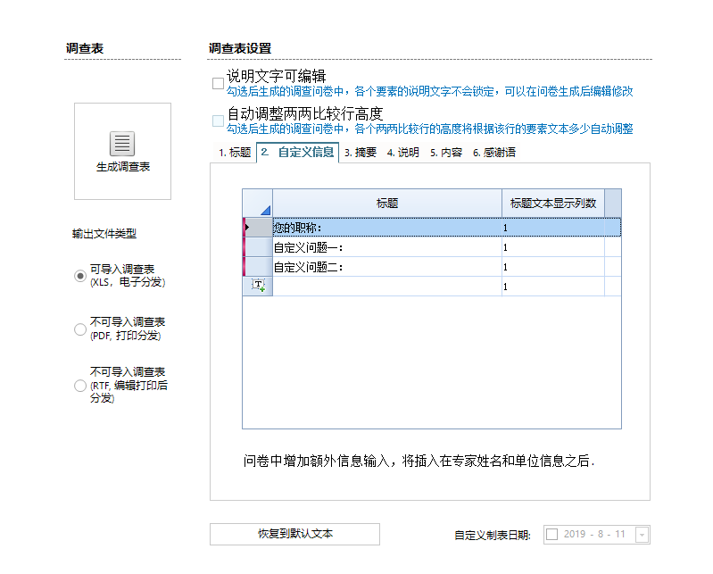
这样设定后，生成的问卷中会在“姓名”、“单位”行下插入自定义的额外信息行。上图设定生成的问卷内容如下图所示。
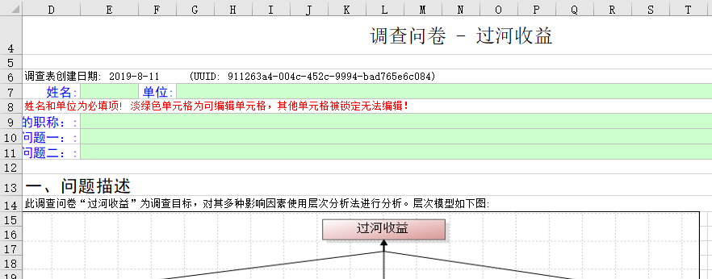
设定自定义信息标题的宽度
从上图中可以看出，由于标题文字较多，默认标题占用1列无法显示完整的自定义信息标题，可以通过设定标题列占用更多的列来解决。下图中，各个问题所占列数均设定为3。
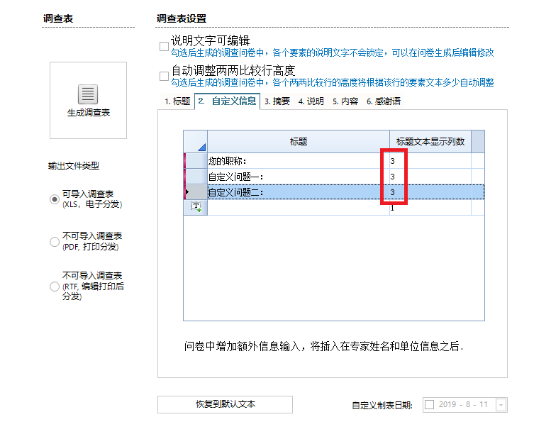
生成的问卷内容如下图所示。
自定义问卷的创建日期
默认情况下，问卷的创建日期会使用生成问卷时的系统日期，如果需要设定这个日期，可以通过勾选调查表设置窗口右下方的“自定义制表日期”并设定希望的日期。
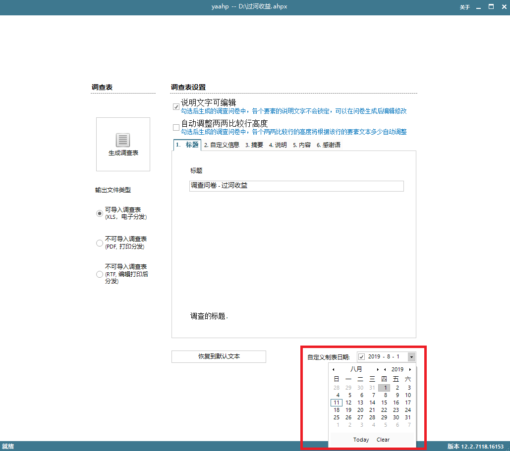